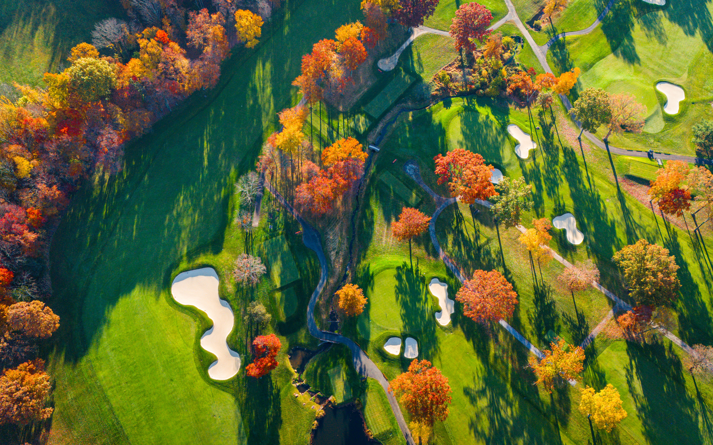
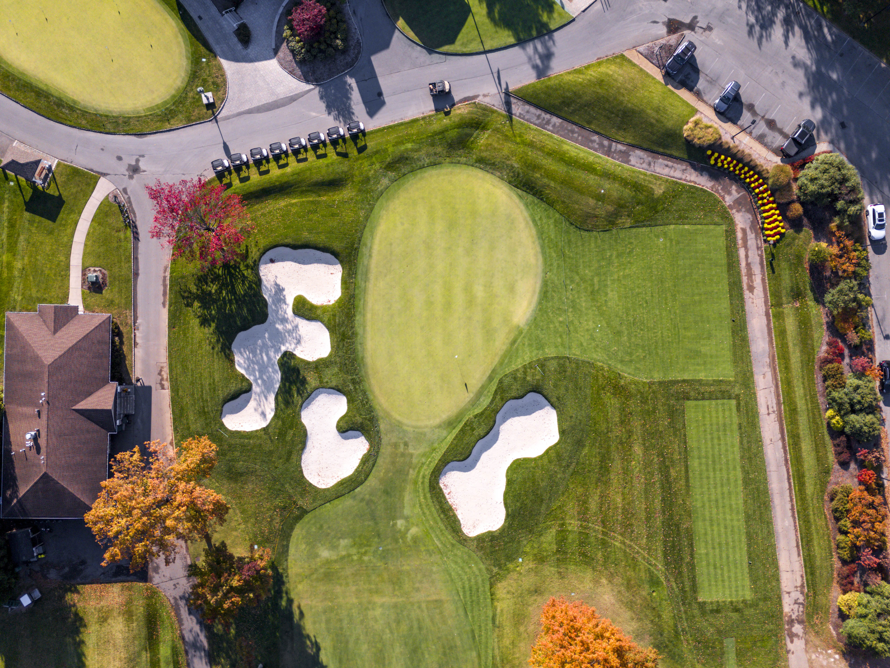
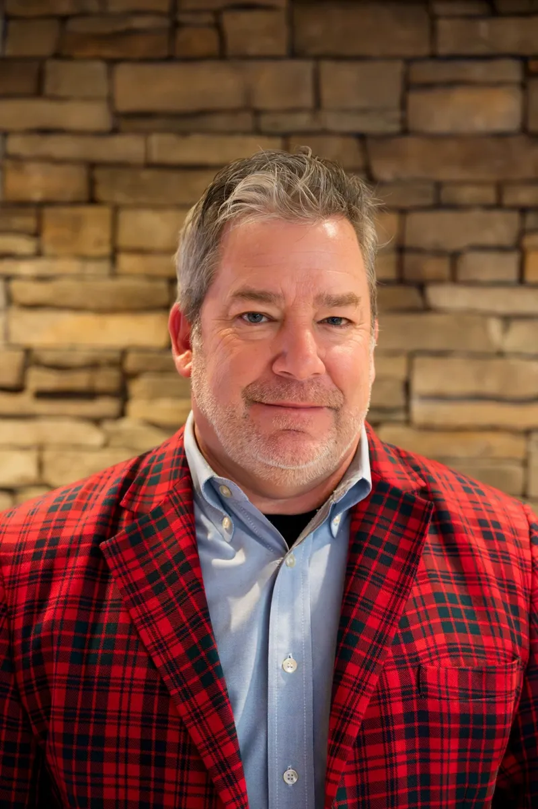

The Northeast Golf Company offers Comprehensive Golf Course Design and Operations Management services. From award-winning restorations to full-service agronomic programming and business analytics, we help clubs find the hidden value within their landscape while fostering unique community cultures.

We provide comprehensive design services for new construction, renovation, and restoration projects. We enjoy exceptional properties and have become adept at embracing the challenges of difficult sites. We listen, take objectives seriously, and let the work follow from an inherent understanding of the land.
Each engagement is shaped by what the land, and the club, actually need.

NGC Golf Operations Management serves clubs, owners, municipalities, and financial institutions. We bring a seasoned team to day-to-day management, staffing and training, agronomic care, and food and beverage. Over fifty years of combined experience, focused on conditioning and the player experience.
Our work is local. We staff into the community, for those that will serve the community, building course-by-course "community cultures" that outlast any single project.

My time is committed to your project. The work ethic and service commitment brought to each project is the foundation of our success. I have been finding, studying, designing, building, and maintaining golf holes since I was a young boy.
Our award-winning work at The Preserve at Boulder Hills, Mohegan Sun Golf Club, and Rockleigh Golf Course defines our fascination with variety, history, and strategic thought. As your partner, we work diligently to ensure efficient collaboration, staying on-site continuously during construction.
More about RobertTrey joined the studio in 2021, after completing his bachelor's degree at Brigham Young University. He is currently completing graduate work at Penn State in Landscape Architecture and Law, and in 2023 was named a Wadsworth Scholar by the ASGCA.
He supports Robert across the practice, contributing historic research, 3D visualization, in-field construction observation, and public engagement materials.
A representative selection. Select to learn more.
If you have a property, a project, or simply a question, we'd like to hear from you.